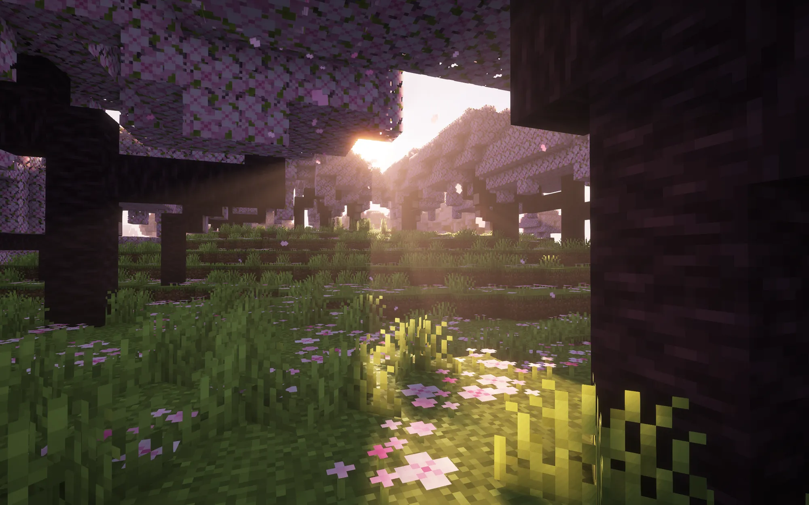

03COMMUNITY
FUZHOU SENIOR HIGH / MINECRAFT
一起建造，
不只一张地图。
这不是一块突兀的“广告位”，而是小屋里向同校玩家敞开的一扇门：聊天、探索，也一起留下东西。
- 主题
- Minecraft
- 对象
- 福高同学
- 群号
- 692629678

COMMUNITY FILE2026 / FUZHOU
FUZHOU SENIOR HIGH
福州高级中学
Minecraft 交流群
QQ群692 629 678
点击复制，随后前往 QQ 搜索加入。
THE WORLD SO FAR
世界已经长出的样子
地图、城市、舰船和樱花林。点击图片查看大图；这里不会把“查看”伪装成跳转。
READY TO BUILD?下一块方块，
下一块方块，
可以由你放下。
福州高级中学 Minecraft 交流群
692629678